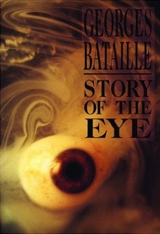

The Story of the Eye (A szem története)
Író: Georges Bataille Kiadás: 1928
The Story of the Eye" (A szem története) Georges Bataille tollából 1928-ban megjelent provokatív és sokat vitatott regény. A mű erotikával, szürreális elemekkel és tabudöntögetéssel átitatott, melyben Bataille merész és kísérletező stílusban kutatja az emberi szexualitás sötét és különös szegmenseit, létrehozva egy feledhetetlen és sokszor zavarba ejtő olvasói élményt.
Georges Bataille

Foglalkozása: francia író és filozófus Született: 1897–1962
A 20. század elején és közepén élt. Munkásságában széles spektrumú témákat érintett, beleértve az erotika és a szexualitás elemzését is. Híres Művei: Bataille művei közé tartozik az "Erotism: Death and Sensuality" (Erotika: Halál és Érzékiesség), amelyben az erotikus élmények és az élet és halál kapcsolatát vizsgálja.